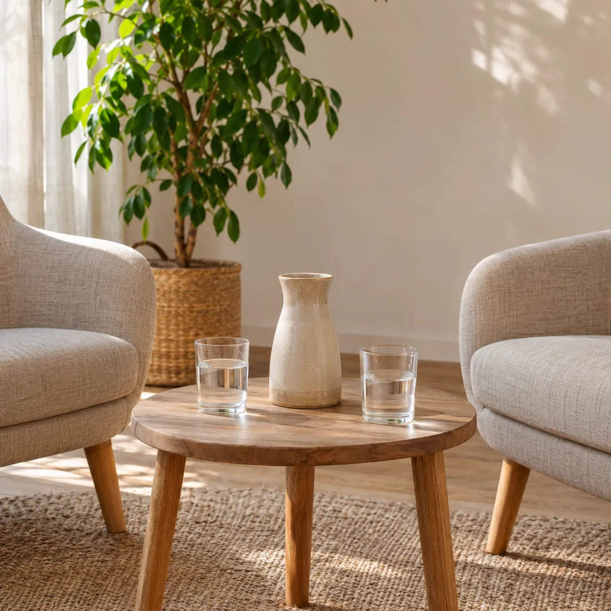
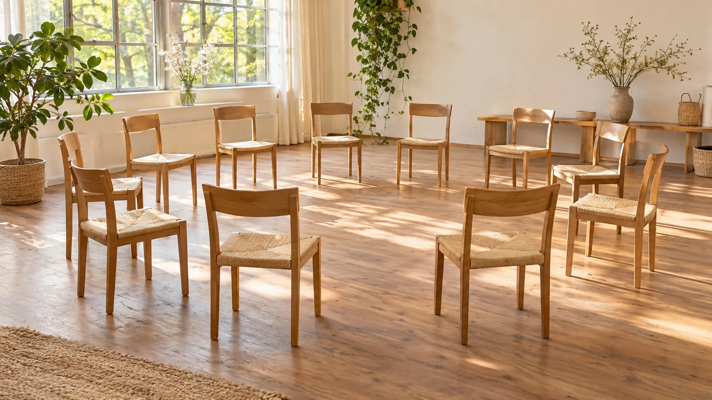
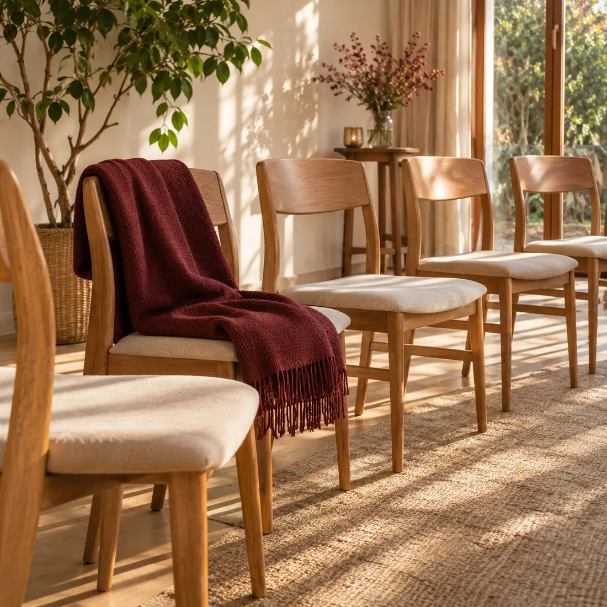
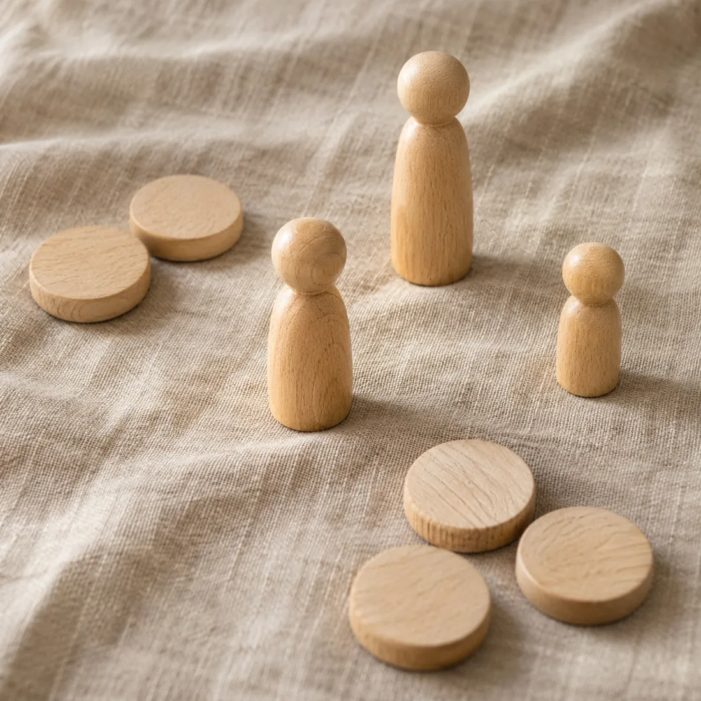
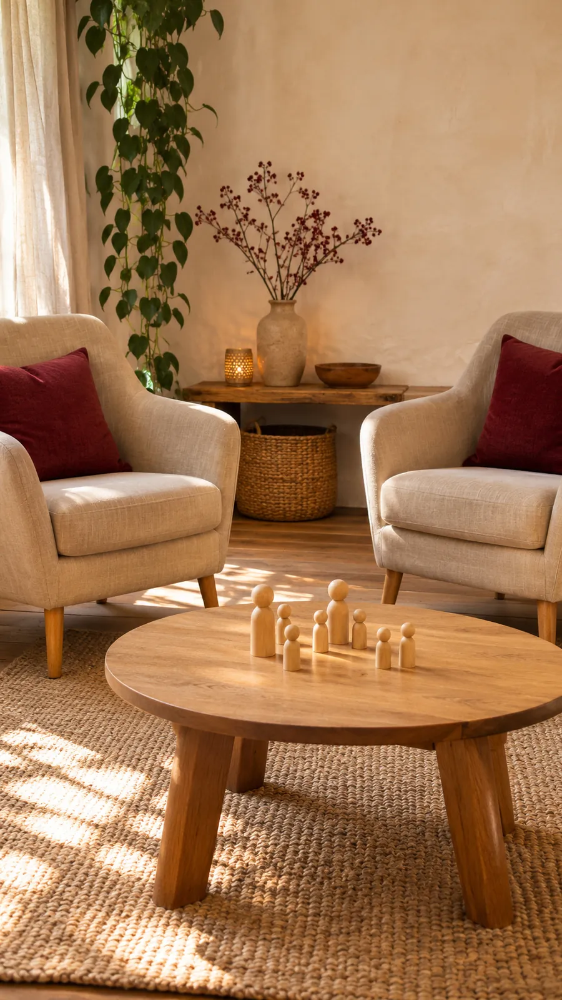
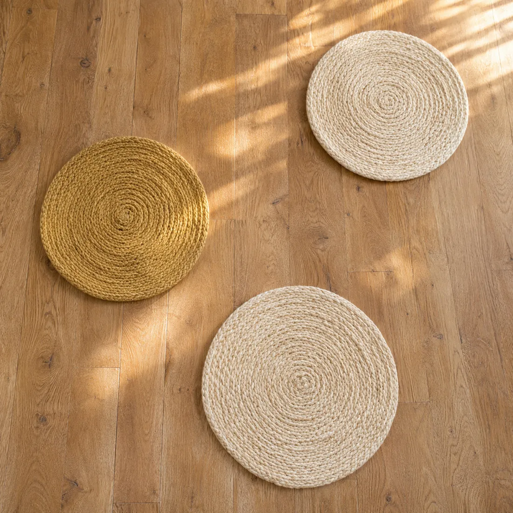
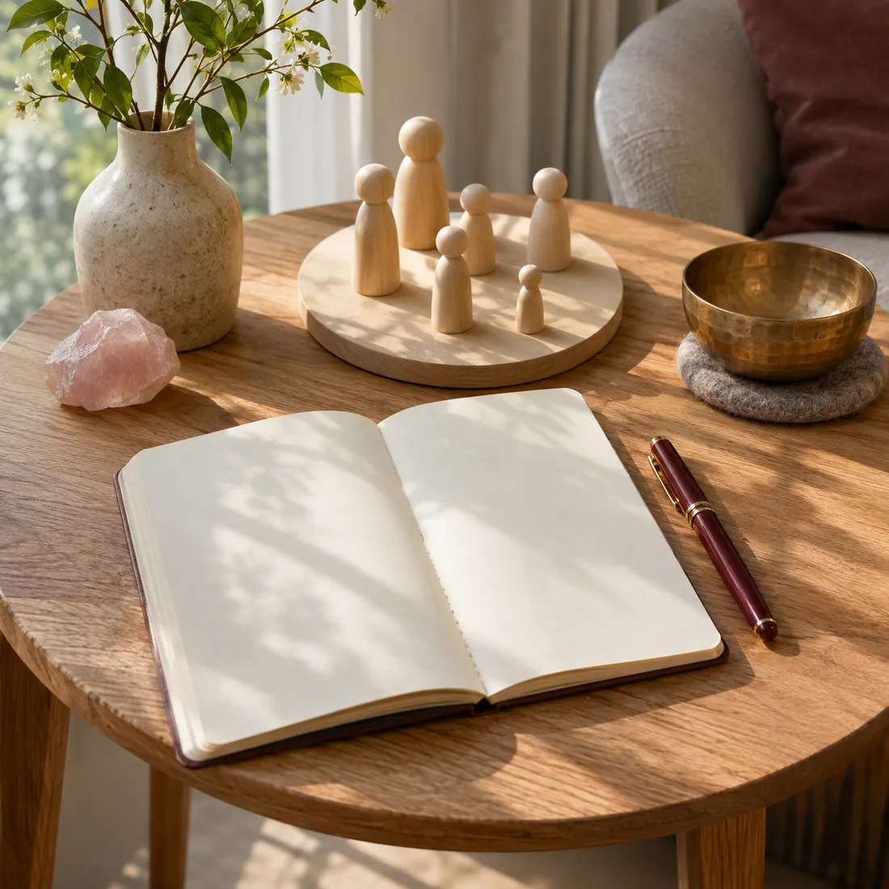
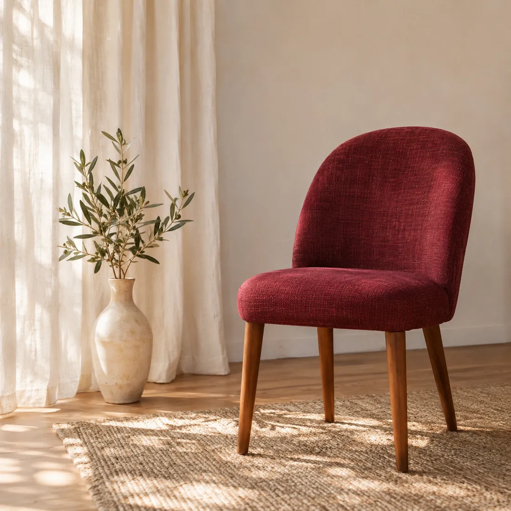

Asesoría sistémica individual
Órdenes del amor
Un encuentro a solas para mirar un tema que te inquieta —un vínculo, una decisión, algo que se repite— a la luz de los órdenes del amor.
Consultar por la asesoríaLorena González · Facilitadora
Asesoría sistémica individual en los órdenes del amor y talleres grupales. Coordinamos el encuentro por WhatsApp.


Órdenes del amor
Un encuentro a solas para mirar un tema que te inquieta —un vínculo, una decisión, algo que se repite— a la luz de los órdenes del amor.
Consultar por la asesoría
Constelaciones en ronda
Encuentros en grupo donde podés constelar tu tema o acompañar como representante en el de otra persona.
Consultar por el próximo taller
Tres principios que la mirada sistémica observa en toda familia.
Cada persona del sistema tiene derecho a pertenecer, también quienes fueron excluidos u olvidados.
Quienes llegaron antes tienen su lugar antes. Cuando ese orden se respeta, cada uno puede ocupar el suyo.
Entre lo que se da y lo que se recibe se busca un equilibrio. Cuando se rompe, los vínculos lo sienten.
En una constelación no se juzga a nadie: se mira a cada persona en su lugar.
Soy Lorena González, facilitadora provisional certificada por Constelaciones Familiares Rosario. Acompaño asesorías sistémicas individuales en los órdenes del amor y coordino talleres grupales.
Mi tarea es sostener un espacio cuidado para que puedas mirar tu historia con respeto, a tu ritmo y sin juicios.


Contás en pocas palabras qué te trae y si te interesa la asesoría individual o un taller.
Te paso los días y horarios disponibles y respondo tus dudas antes de empezar.
En la asesoría trabajamos a solas; en el taller, en ronda con el grupo.

Es un enfoque sistémico desarrollado por Bert Hellinger que mira a cada persona como parte de su sistema familiar y observa sus vínculos a la luz de los órdenes del amor.
Nos encontramos a solas. Contás el tema que querés mirar y lo trabajamos con figuras o marcas en el piso que representan a las personas de tu sistema.
Es un encuentro en ronda. Quien trae un tema elige, entre los participantes, representantes para las personas de su familia; el resto acompaña y también puede ser elegido.
Sí. Podés participar como representante en las constelaciones de otras personas. Muchas veces eso también deja algo para mirar.
No. Alcanza con nombrar el tema y algunos datos de tu familia. No hace falta preparar nada antes.
No. Las Constelaciones Familiares no reemplazan un tratamiento médico ni psicológico; pueden acompañarlo.
En Rosario. El lugar, el día y el horario se coordinan por WhatsApp.

Contame si te interesa la asesoría individual o el próximo taller grupal y te respondo por WhatsApp.
Rosario, Santa Fe · Día y horario a coordinar